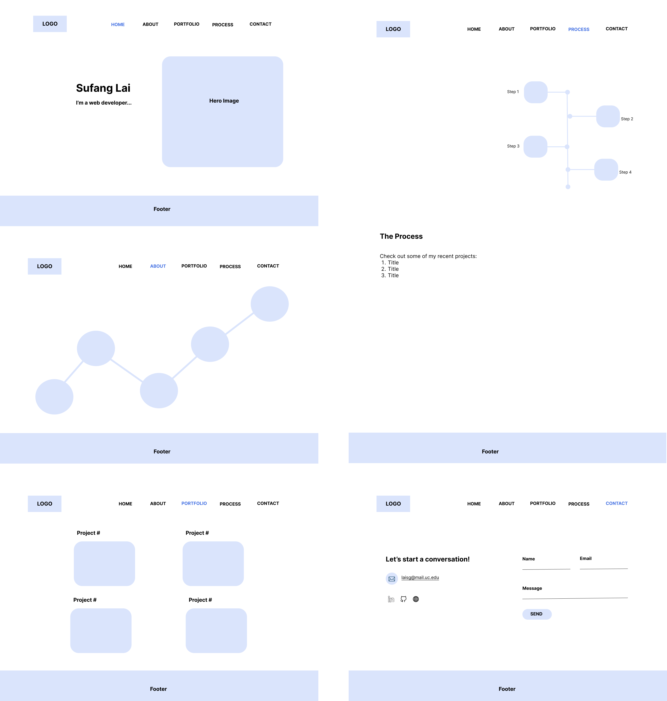

How I Built this Website?
Creating my portfolio website was an exciting journey—a process that combined creativity, logic, and a lot of coffee! Every step, from understanding what I wanted this website to achieve to perfecting its final design, taught me valuable lessons about planning, design, and implementation. Here's a behind-the-scenes look at how I built my website, step by step.
Step 1: Understand the Requirements
Every great project starts with a clear goal, and my website was no exception. I asked myself some key questions to define the purpose of this portfolio: What's the goal of my website? Who's the audience? What results do I expect?
The goal of my website is to showcase my skills, projects, and professional experience in a way that resonates with potential employers and collaborators. My target audience includes recruiters, hiring managers, and peers in the tech and design industry. They need a website that's professional yet creative, functional yet visually appealing. I aim for visitors to gain a clear understanding of my abilities and feel inspired to reach out with collaboration opportunities or professional engagements.
Step 2: Website Structure
With the project's purpose and audience defined, I moved on to the structure of the site. How many pages? What content to include in each page? With these questions in mind, I decided on a multiple-page structure for easy navigation:
- Home: a quick overview of my website, a concise introduction and a hero image.
- About: a deeper dive into my journey, roles, and values.
- Portfolio: a selection of projects with links for detailed exploration.
- Process: a space to share my work process.
- Contact: a clean form and clickable links to my email and social media.
Step 3: Wireframe
Wireframing allowed me to visualize the website's design and navigation before jumping into code. I focused on making navigation intuitive and content accessible. A consistent header and footer with links ensured visitors could move seamlessly between pages.
Figure 1. Wireframe
Step 4: Website Design
This was the fun part—choosing the aesthetics to bring my vision to life. I focused on the key visual elements including color scheme, typography, and designing other visual assets like icons, logo, and hero images, etc.
Figure 2. Visual assets
Step 5: Build the Website
Now came the technical part—building the website. I started with semantic HTML, organizing the content logically with clear headings, sections, and accessibility in mind. Then I wrote custom CSS for layouts, styles, and responsive behavior. This was where the design truly came to life.
Step 6: Finalize and Iterate
The final step was all about refining the website to ensure a polished and professional result. Key improvements include: adjusting spacing, alignment, and color contrast for better readability, optimizing image sizes, implementing media queries for responsiveness, testing and iterating overall functionality and experience.
Summary: Skills Required
| Steps | Skills |
|---|---|
| 1. Website Requirements | UX research, project planning, audience analysis |
| 2. Website Structure | Information architecture, content strategy |
| 3. Wireframe | Prototyping |
| 4. Website Design | Graphic design, color theory, typography, UX & UI design, Figma |
| 5. Website Building | HTML, CSS, JavaScript, project management |
| 6. Finalize & Iterate | Finalizing, testing, debugging & iterating |